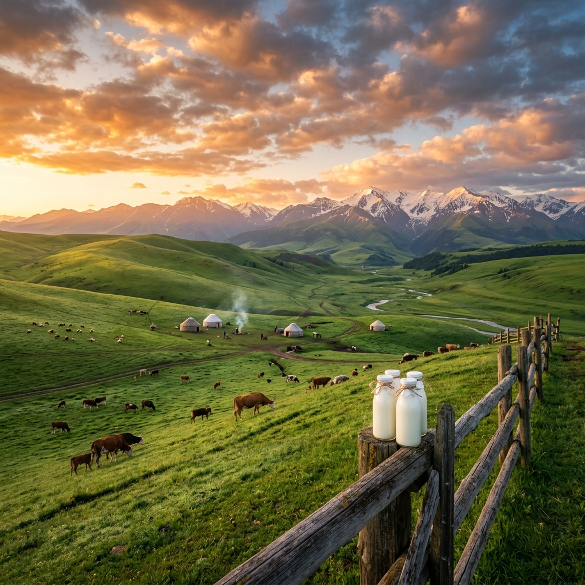
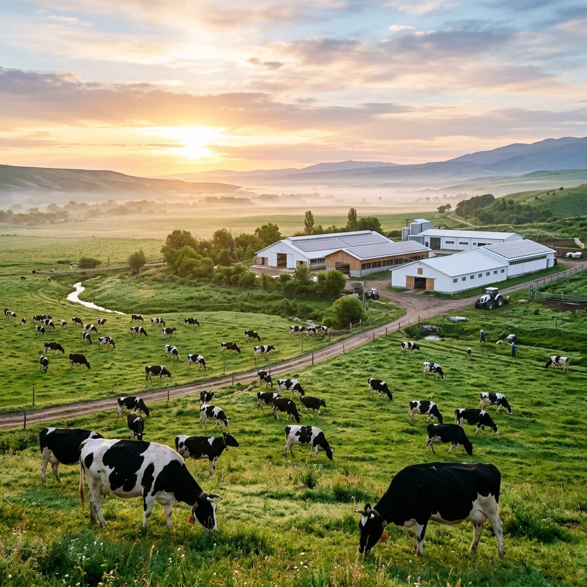

kz
ru

Түркістанның ежелгі дәстүрлерінен әлемдік сапа стандарттарына дейін
2024 жылы Milkart-ты алғаш рет қолға алғанда, біз «миссия» немесе «инновациялық стратегия» сияқты әдемі сөздермен көмкерілген үлкен бизнес-жоспарлар құрған жоқпыз. Біз жай ғана Түркістанда кешкісін шай ішіп отырып, бір қарапайым нәрсені түсіндік: бүкіл даланың рухани орталығы болған киелі қаламызда балаларға арналған қарапайым, табиғи сүт табу қиындап кетіпті. Дәл балалық шағымызда әжелеріміз беретін — Қаратау бөктерінің шөбі иіс беретін, химиясыз және құрғақ ұнтақсыз қою сүтті аңсадық.
Отбасымызға ең жақсы өнімді ұсыну деген қарапайым ниеттен біздің тарихымыз басталды. Біз дала қонақжайлылығының жылуын заманауи технологиялармен ұштастырып, сүттің әрбір тамшысының пайдасын сақтағымыз келді. Бұл біз үшін жай ғана бизнес емес, бұл — жеріміздің дәстүрін сақтап, оны әрқайсыңызбен бөлісудің жолы.

Біз шағын, бірақ ең маңызды қадамнан бастадық: Түркістан мен облыстағы әрбір отбасына таза өнім ұсыну. Біз үшін бұл жай ғана нарық емес, бұл біздің үйіміз. Сондықтан біз жергілікті шағын фермалармен тікелей жұмыс істейміз. Біз сүтті алыстан тасып, жолда бұзылмас үшін консерванттар қоспаймыз — көліктеріміз күн сайын таңертең зауытқа балғын шикізатты жеткізеді.
Сүт сауылғаннан кейін бірнеше сағат ішінде дүкен сөрелеріне түсетіндей етіп жұмысты ұйымдастырдық. Біз көршілеріміз үшін жұмыс орындарын ашамыз, фермерлерге әділ баға төлейміз және Milkart-тың әрбір бөтелкесі отбасылық дастарханға қуаныш пен денсаулық әкелгенін қалаймыз. Көршілердің сенімі — біздің еңбегіміздің ең үлкен бағасы деп білеміз.

Әрине, біз сүтіміздің дәмін Қазақстанның кез келген түкпірінде білсе екен деп армандаймыз. Бірақ біз қаржылық есептердегі әдемі сандар үшін емес, адамдардың денсаулығы үшін өскіміз келеді. Қазақстандықтар шын жүрекпен жасалған сапалы отандық өнімдерді тұтынуға лайықты деп сенеміз.
Мақсатымыз — Түркістанның күні мен дала ауасының тазалығын Алматы, Астана, Ақтау және еліміздің басқа да қалаларына жеткізу. Біз отандық брендтің кез келген импорттық өнімнен асып түсіп, сапа мен адалдықтың үлгісі бола алатынын дәлелдегіміз келеді.

Сүтіміздің жаны бар деп сенеміз. Оңтүстіктің бірегей климаты, күн сәулесі және Қаратау бөктеріндегі емдік шөптер — мұның бәрі сүттің дәмін ерекше етеді. Біз осы дәмді бүкіл әлеммен бөлісуді армандаймыз.
Жоспарымызда — көрші елдерге және одан әрі экспорттау. Қытайда, Азия мен Еуропа елдерінде адамдар Milkart сүтін сатып алғанда, бұл Қазақстанның қақ ортасынан шыққан, таза қолмен және ашық жүрекпен жасалған өнім екенін білсе дейміз. Біз елімізді биік сөздермен емес, жұмысымыздың сапасымен танытамыз.
Біз кез келген жолмен өндіріс көлемін арттыруға қарсымыз. Түркістан жері бізді асырап отыр, сондықтан біз де оған қамқорлық жасауға міндеттіміз. Біз суды үнемдеуге, қалдықтарды азайтуға және даламызды ластамайтын, оңай қайта өңделетін қаптамаларды қолдануға тырысамыз.
Сиырларға деген көзқарасымыз да ерекше — біз өз жануарларын жақсы көретін, оларды еркіндікте ұстайтын, табиғи шөппен қоректендіретін және гормондарды қолданбайтын фермерлермен ғана жұмыс істейміз. Біз сенеміз: бақытты сиыр ең дәмді және пайдалы сүт береді. Бұл біз күн сайын ұстанатын қарапайым ақиқат.